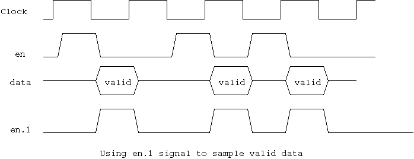

//
drive signals to inactive state
clav.0
= 1'b0 ; // active high
soc.0
= 1'b0 ;
data.0
= 0 ;
//
using two semaphore to allow back to back drive
clav_sem
= new ; // mutex for driving clav
drive_sem
= new ; // mutex for sending a cell
}
関数 drive_cell() は、セル インスタンスを引数にとり、それをUTOPIAポートへと
ドライブします。二つのセマフォーが、clav信号とデーターポートへのアクセスを
調停するために使用されています。セルの最期のバイトデータがドライブされる
時点で、現在実行中のセルドライバーは、clav信号を０にweak状態でドライブし、
clev_semを開放します。もし、別のドライバが次のセルをドライブする準備が
出来ている場合、このcleve信号は、１に書き換えられ、セルは連続して
送られます。データ転送は、en信号が前のサイクルでドライブされた場合に
ストールします。このストールが発生する可能性があるため、次のドライバーは、
clev_semを前のドライバーの５２バイト目で受け取っても、データーをすぐには
ドライブ出来ない場合があります。このため、二つ目のセマフォー drve_semによって
データのドライブのタイミングを制御しています。
if( i == 52 ) {
clav.0 = 1'b0 weak ;
clav_sem.put() ;
}
assert(
@1,MAX_ENABLE_DELAY (en.1 == 1'b0) // using pipe one signal
) ; // note that using
}
drive_sem.put()
;
printf(
"a cell driven on %d at %d\n", id, get_cycle() ) ;
}

変数 receive_countとreceive_numが、受信ポートがわのフロー制御のために
使用されます。テスターは、一つのcellの受信が期待されるたびにreceive_numを
１増加します。この値は、ランダム値ジェネレータで発生された遅延の後に
receive_countに転送され、この値に基づいてフロー制御のためのclav信号が
ドライブされます。
二つの異なった遅延メカニズムのための関数、receive_enable_loop()と
receive_enable_loop_rnd() が利用できます。
関数 receive_enable_loop()は、送られたセルと、受信すべきセル間の遅延を
最小値に幅をもった乱数をプラスすることで決定します。変数receive_numは、
セルがドライバーによってポートにドライブされた時点で、テスターによって
増加され、対応するセルが出力側に転送されることが期待されます。コンフィグ
レジスタの値によって、一つのセルが複数のポートに転送される場合もあり、
この場合テスターは、複数のレシーバーインスタンスの receive_num変数を
増加する必要があります。
この関数によって使用されるフロー制御は、セルが連続的に転送されると
フロー制御を全く行なわなくなります。(つねに受信すべきセルが存在する)
関数 receive_enable_loop_rnd()は、受け取られたセルから次に受け取られるセルまで
の遅延を制御します。したがって、このメカニズムは常にフロー制御が行なわれる
ようにすることが出来ます。
変数receive_countは、それ自身がゼロで、かつreceive_numがゼロでない場合に
のみ、増加します。したがって、セルの受信は、一つ一つ処理されます。
ランダム分散クラス(12章で説明します。)のインスタンスに
よって生成された遅延が、受信するセルとセルの間に適応されます。
(定数０を指定することで、遅延の無い状態も作り出せます)
このメカニズムは、ATM転送側での特定の受信レートをつくり出すことが出来ます。
関数 receive_loop() は、ポートからセルを受信し、それを受信キューに転送する
スレッドを生成します。
この関数は、変数receive_countがゼロでないかをチェックし、受信すべき
セルがあるときには、clav信号をドライブしてセルを受信します。
セルバイトの転送ループの最期で、receive_countがゼロかどうかをチェックし、
もしゼロでなければ、連続してセルの受信をおこないます。
これによって、UTOPIAポートのフロー制御をコントロールします。
レシーバーがセルのバイトデータを受信し始めたばあい、en信号が
最大 MAX_ENABLE_DELAY (１０００サイクルに設定)以内に出力されることを
期待します。
fork
forever
{
if( receive_count == 0 ) {
while( receive_count == 0 ) @(posedge tx_clk) ;
clav.0 = 1'b1 ;
@(posedge tx_clk) ;
}
clav.0 = 1'b1 ;
receive_count-- ;
cell = new ;
for( i = 0 ; i < 53 ; i++ ) {
if( i == 52 && receive_count == 0) {
clav.0 = 1'b0 ;
}
assert(
@1,MAX_ENABLE_DELAY (en.0 == 1'b0)
) ; // note that using
assert( soc.0 == i?1'b0:1'b1 ) ;
cell.data[i] = data.0 ;
}
printf( "a cell received on %d at %d\n", id, get_cycle() ) ;
rcv_que.que.send( cell ) ;
}
knife
}